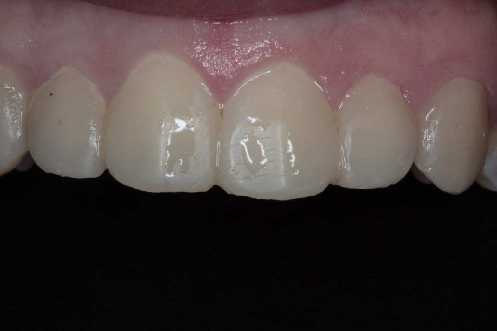
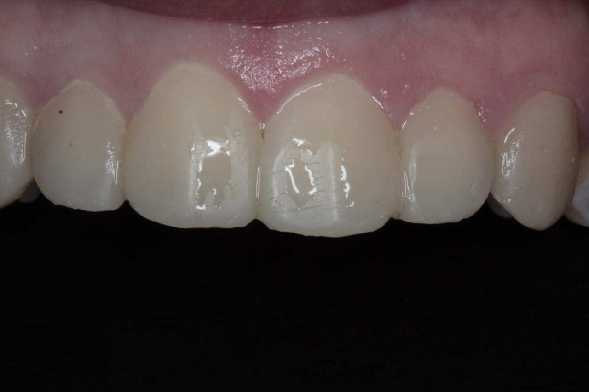
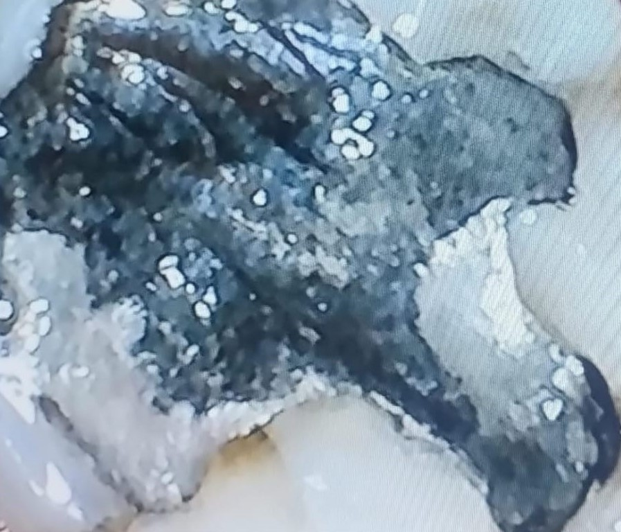

¿Qué puedo hacer por ti?
 

RESTAURACIÓN Y REHABILITACIÓN DENTAL
Procedimientos involucrados:
Endodoncia: Si el daño llegó a la pulpa dental.
Tallado dental: Para preparar el diente para una corona.
Colocación de coronas o puentes: Para restaurar la funcionalidad y estética.
Implantes dentales: Si el diente no pudo salvarse y fue reemplazado.


Rehabilitación adhesiva con resina compuesta
Procedimiento:
Diagnóstico clínico y radiográfico.
Retiro cuidadoso de la amalgama y tejido cariado.
Aislamiento del diente (posiblemente con dique de goma).
Grabado ácido, adhesivo y aplicación de resina.
